1 AutoTrack-4X 导航套件简介
AutoTrack-4X 是一款面向复杂环境自主移动任务的导航套件平台，集成高精度SLAM（即时定位与建图）系统与智能导航算法，具备卓越的环境感知、自主定位、路径规划与动态避障能力。该平台采用四轮独立差速驱动设计，具备原地转向、全向移动等优异的机动性能，适用于仓储物流、户外巡检、农业作业、科研验证等多种场景。系统模块化设计，支持激光雷达、深度相机、IMU、RTK等多种传感器集成，便于用户进行二次开发与功能扩展。
本文以普蓝机器人DR100底盘为例，详细介绍AutoTrack-4X平台的构建与实现过程。
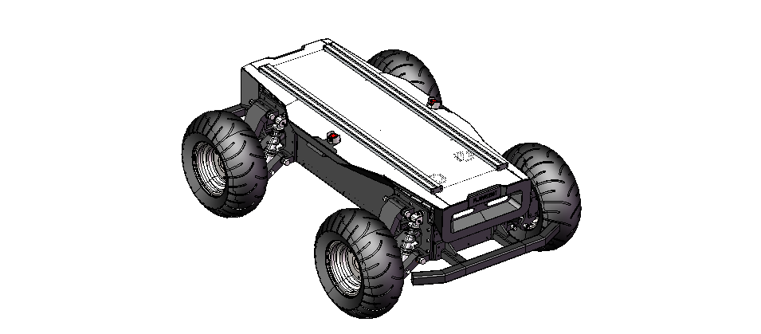
1.1 AutoTrack-4X系统特点
- 计算平台：高性能工控机，支持复杂算法实时运算
- 软件架构：基于ROS框架的模块化软件系统
- 传感器融合：支持激光雷达、IMU、深度相机、RTK-GPS等多种传感器
- 算法集成：集成LeGO-LOAM、LIO-SAM等先进SLAM算法
- 通信能力：支持CAN总线、以太网、串口等多种通信协议
- 实时性能：毫秒级数据处理与控制响应
- 扩展性：模块化设计，支持功能定制与二次开发
1.2 工控箱接口配置
AutoTrack-4X工控箱提供丰富的接口，满足各种传感器和设备的接入需求：
- 电源管理：28~80V DC 输入，多路12V DC 稳压输出
- 通信接口：以太网、USB3.0、RS-485、RS-232、CAN总线
- 传感器接口：激光雷达网口、IMU串口、相机USB接口
- 显示输出：HDMI显示输出
- 存储扩展：NVMe固态硬盘
- 开发支持：配套SDK、ROS驱动包、仿真环境
1.3 适用场景
AutoTrack-4X平台广泛适用于多种应用场景：
- 仓储物流：自主货物搬运与仓库管理
- 户外巡检：园区、工厂、农场等环境的自主巡检
- 农业作业：精准农业中的自主导航与作业
- 科研验证：移动机器人算法研究与验证平台
- 教育教学：机器人课程实验与实训平台
- 无人驾驶：自动驾驶技术研究与开发
1.4 AutoTrack-4X SLAM系统概述
AutoTrack-4X平台集成了高精度SLAM（Simultaneous Localization and Mapping）系统，通过集成激光雷达、IMU等多种传感器，实现同时定位与地图构建功能。本系统采用ROS（Robot Operating System）作为软件框架，结合LeGO-LOAM、LIO-SAM等先进SLAM算法，构建完整的自主移动解决方案。本文以DR100底盘为硬件实现示例，展示平台的具体应用。
AutoTrack-4X系统主要功能包括：
- 多传感器融合感知：集成激光雷达、IMU、深度相机等传感器，获取全方位环境信息
- 高精度定位：利用多传感器融合技术，实现厘米级定位精度
- 实时地图构建：支持2D栅格地图和3D点云地图的实时构建与更新
- 智能路径规划：基于全局和局部路径规划算法，实现动态避障与最优路径选择
- 自主导航控制：控制移动底盘实现精确的自主导航与运动控制
- 模块化扩展：支持多种传感器和功能模块的灵活集成与扩展
2 工控机环境
2.1 硬件环境
- 处理器：CPU-Intel i5
- 内存：32G
- 硬盘：128G SSD
- 电源：DC12V
- 接口：VGA, HDMI, LAN, USB2.0, USB3.0
2.2 软件环境
- 系统版本：Ubuntu-20.04
- ROS版本：ROS Noetic Ninjemys
- GTSAM 版本: v4.1.0
2.2.1 Ubuntu-20.04安装
首先需要从官方渠道下载Ubuntu 20.04 LTS的ISO镜像文件。进入Ubuntu官方发布页面下载Ubuntu 20.04 LTS镜像。建议选择Desktop版本，因为它包含了完整的图形界面和开发工具。
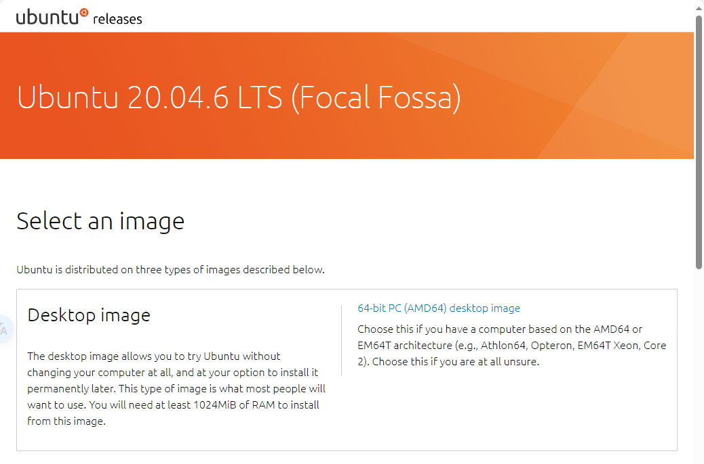
下载后，推荐使用Rufus烧录镜像到U盘，注意会清空U盘原有文件。
如图，先选择需要烧录的U盘，然后选择上一步下载的镜像文件，点击“开始”将镜像烧录到U盘
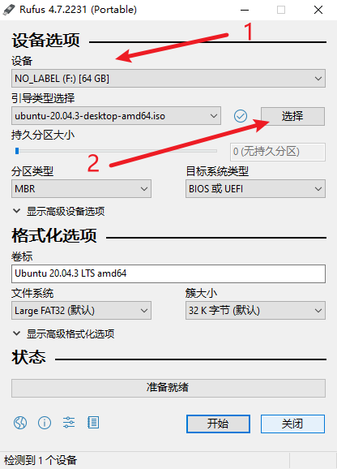
最后将U盘插入工控机，通过启动盘引导，根据需求自行安装，此部分请参考网上的Ubuntu安装相关文章，本文不再赘述。
2.2.2 ROS Noetic 安装
参考文档：
ROS WIKI:
https://wiki.ros.org/noetic/Installation/UbuntuROS WIKI 简体中文:
https://wiki.ros.org/cn/noetic/Installation/Ubuntu
配置Ubuntu软件仓库，并设置密钥：
sudo sh -c '. /etc/lsb-release && echo "deb http://mirrors.tuna.tsinghua.edu.cn/ros/ubuntu/ `lsb_release -cs` main" > /etc/apt/sources.list.d/ros-latest.list'
sudo apt-key adv --keyserver 'hkp://keyserver.ubuntu.com:80' --recv-key C1CF6E31E6BADE8868B172B4F42ED6FBAB17C654
安装ROS：
sudo apt update
sudo apt install ros-noetic-desktop-full
设置环境：
echo "source /opt/ros/noetic/setup.bash" >> ~/.bashrc
source ~/.bashrc
安装后，在终端执行roscore，测试ROS：
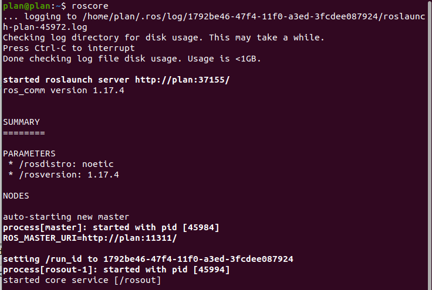
2.2.3 GTSAM
终端输入命令下载GTSAM安装包：
wget clone https://github.com/borglab/gtsam/archive/4.0.0-alpha2.zip
下载完成后双击安装包，提取文件到安装包目录即可：
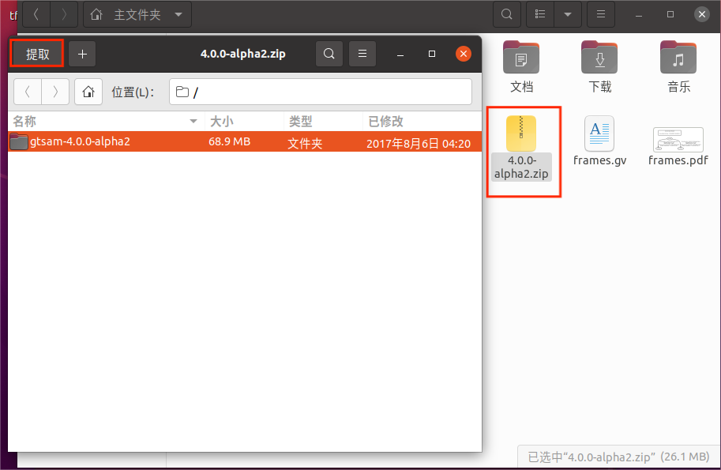
关闭上图的两个窗口，进入提取文件的目录右键选择从终端打开:
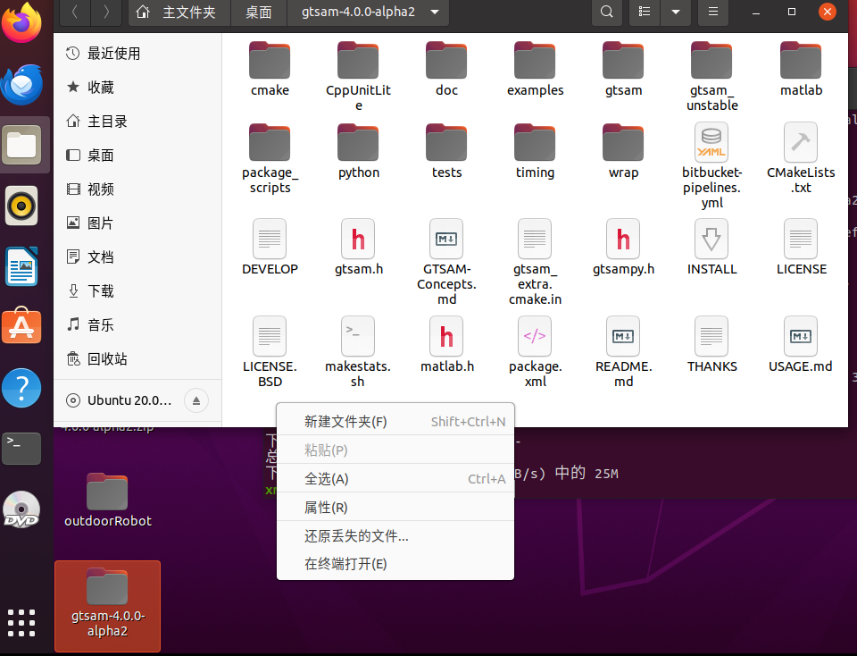
输入命令：
mkdir build
cd build
cmake ..
sudo make
sudo make install
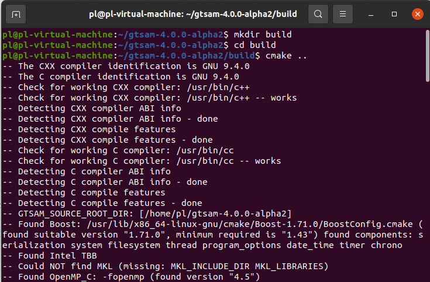
sudo make过程有点长，请耐心等待。
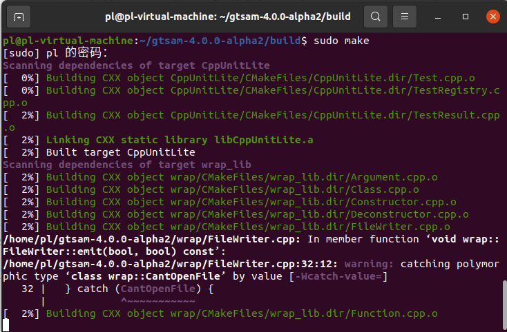
安装完成后运行测试：
步骤1：
打开终端输入：
cd
mkdir gtsam_test && cd gtsam_test
touch CMakeLists.txt
touch main.cpp
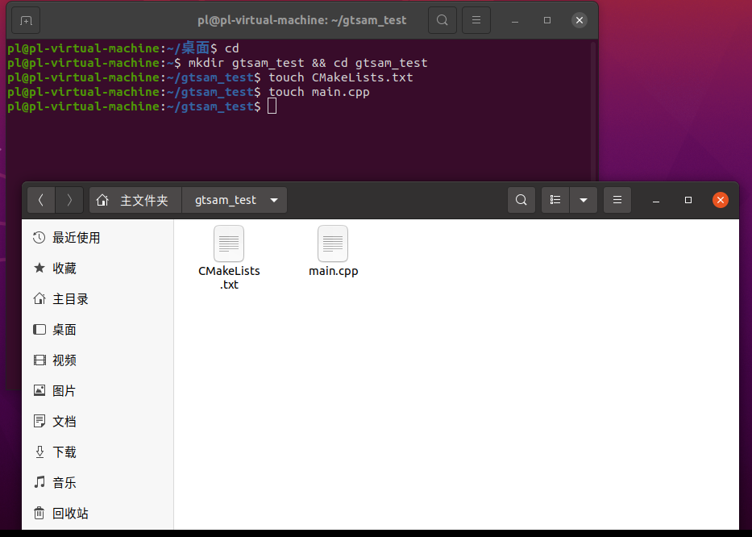
步骤2：
打开CMakeLists.txt文件添加内容：
cmake_minimum_required(VERSION 3.10)
project(GtsamTest)
set(CMAKE_CXX_STANDARD 14)
# 设置编译器标志
set(CMAKE_CXX_FLAGS "${CMAKE_CXX_FLAGS} -std=c++14")
# 寻找必要的包
find_package(Eigen3 REQUIRED)
find_package(Boost REQUIRED COMPONENTS system filesystem serialization thread)
# 设置GTSAM路径
set(GTSAM_INCLUDE_DIRS "/usr/local/include")
set(GTSAM_LIBRARIES
"/usr/local/lib/libgtsam.so"
"/usr/local/lib/libgtsam_unstable.so" # 如果需要不稳定功能
)
# 创建可执行文件
add_executable(test_gtsam main.cpp)
# 包含目录
target_include_directories(test_gtsam PRIVATE
${GTSAM_INCLUDE_DIRS}
${EIGEN3_INCLUDE_DIRS}
${Boost_INCLUDE_DIRS}
)
# 链接库
target_link_libraries(test_gtsam
${GTSAM_LIBRARIES}
${Boost_LIBRARIES}
)
# 添加链接目录
target_link_directories(test_gtsam PRIVATE /usr/local/lib)
打开main.cpp添加内容：
#include <gtsam/geometry/Pose3.h>
#include <iostream>
int main() {
gtsam::Pose3 pose; // 创建一个默认的位姿对象
std::cout << "GTSAM安装成功！成功创建Pose3对象。" << std::endl;
std::cout << "默认位姿矩阵:\n" << pose.matrix() << std::endl;
return 0;
}
步骤3：
打开终端输入：
cd ~/gtsam_test
mkdir build && cd build
cmake ..
make
./test_gtsam
如果终端输出类似"GTSAM安装成功！"的字样，并且打印了一个4x4的单位矩阵，则代表gtsam安装成功:
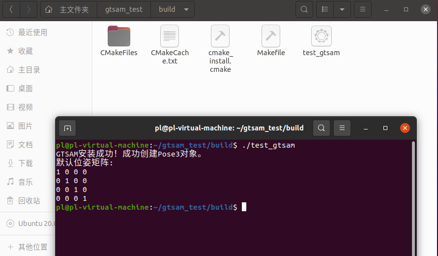
3 ROS基础教程
参考文档:
ROS教程 - ROS Wiki:
https://wiki.ros.org/cn/ROS/Tutorials/NavigatingTheFilesystem
ROS（Robot Operating System）是一个适用于机器人的开源的元操作系统。它提供了操作系统应有的服务，包括硬件抽象，底层设备控制，常用函数的实现，进程间消息传递，以及包管理。它也提供用于获取、编译、编写、和跨计算机运行代码所需的工具和库函数。在某些方面ROS相当于一种“机器人框架（robot frameworks）"。
ROS的核心设计理念是分布式计算，通过节点（Node）之间的通信来实现复杂的机器人功能。每个节点都是一个独立的进程，负责特定的功能模块，如传感器数据采集、运动控制、路径规划等。
3.1 ROS常用命令
3.1.1 基础命令表
| 命令 | 作用 | 示例用法 |
|---|---|---|
catkin_create_pkg |
创建功能包 | catkin_create_pkg my_pkg rospy roscpp |
rospack |
获取功能包的信息 | rospack find geometry_msgs |
catkin_make |
编译工作空间中的功能包 | catkin_make -j4 |
rosdep |
自动安装功能包依赖的其他包 | rosdep install --from-paths . |
roscd |
功能包目录跳转 | roscd geometry_msgs |
roscp |
拷贝功能包中的文件 | roscp my_pkg config.yaml ~/backup/ |
rosed |
编辑功能包中的文件 | rosed my_pkg my_script.py |
rosrun |
运行功能包中的可执行文件 | rosrun my_pkg my_node.py |
roslaunch |
运行启动文件 | roslaunch my_pkg my_launch.launch |
3.1.2 调试和监控命令
| 命令 | 作用 | 示例用法 |
|---|---|---|
roscore |
启动ROS主节点 | roscore |
rosnode |
查看和管理节点 | rosnode list / rosnode info |
rostopic |
查看和操作话题 | rostopic list / rostopic echo |
rosservice |
查看和调用服务 | rosservice list / rosservice call |
rosparam |
参数服务器操作 | rosparam list / rosparam get |
rosmsg |
查看消息类型 | rosmsg show geometry_msgs/Twist |
rossrv |
查看服务类型 | rossrv show std_srvs/Empty |
roswtf |
系统诊断工具 | roswtf |
3.1.3 详细命令说明
- 查看系统状态
# 查看所有运行的节点
rosnode list
# 查看特定节点的详细信息
rosnode info /my_node
# 查看所有话题
rostopic list
# 实时查看话题数据
rostopic echo /chatter
# 查看话题发布频率
rostopic hz /chatter
# 查看话题信息（类型、发布者、订阅者）
rostopic info /chatter
- 参数服务器操作
# 查看所有参数
rosparam list
# 获取参数值
rosparam get /robot_name
# 设置参数值
rosparam set /robot_name "dr100"
# 从文件加载参数
rosparam load config.yaml
# 保存参数到文件
rosparam dump params.yaml
- 服务操作
# 查看所有服务
rosservice list
# 查看服务类型
rosservice type /add_two_ints
# 调用服务
rosservice call /add_two_ints "a: 1, b: 2"
3.2 ROS文件系统
ROS文件系统采用层级结构，核心概念包括：
| 概念 | 说明 | 示例命令 |
|---|---|---|
| 工作空间 | 包含功能包的目录 | mkdir -p ~/catkin_ws_demo/src |
| 功能包 | ROS软件的基本单元 | catkin_create_pkg my_pkg rospy |
| 节点 | 可执行程序（功能包中的小程序） | rosrun my_pkg my_node |
3.2.1 创建工作空间
步骤1：创建工作空间目录结构
# 创建工作空间根目录和src子目录
mkdir -p ~/catkin_ws_demo/src
cd ~/catkin_ws_demo
# 查看目录结构
ls -la
# 应该看到：
# drwxrwxr-x 3 user user 4096 date time .
# drwxr-xr-x 25 user user 4096 date time ..
# drwxrwxr-x 2 user user 4096 date time src
步骤2：初始化工作空间
# 在工作空间根目录执行编译（初始化）
catkin_make
# 编译成功后会生成以下目录结构：
# ~/catkin_ws_demo/
# ├── build/ # 编译过程文件
# ├── devel/ # 开发环境设置
# │ └── setup.bash # 环境变量设置脚本
# └── src/ # 源码目录
# └── CMakeLists.txt
步骤3：激活工作空间环境
# 激活当前会话的环境变量
source devel/setup.bash
# 验证环境是否正确设置
echo $ROS_PACKAGE_PATH
# 应该包含：/home/用户名/catkin_ws_demo/src:/opt/ros/noetic/share
# 将环境变量添加到.bashrc（可选，方便每次打开终端自动加载）
echo "source ~/catkin_ws_demo/devel/setup.bash" >> ~/.bashrc
步骤4：验证工作空间
# 检查工作空间是否在ROS包路径中
rospack list-names | grep -i demo
# 如果有自定义包，应该能看到
# 检查当前工作空间
roscd
pwd
# 应该显示：/home/用户名/catkin_ws_demo
3.2.2 功能包结构
步骤1：创建功能包
# 进入src目录
cd ~/catkin_ws_demo/src
# 创建功能包（指定依赖项）
catkin_create_pkg my_pkg rospy roscpp std_msgs geometry_msgs
# 查看创建的功能包结构
ls -la my_pkg/
步骤2：功能包目录结构详解
my_pkg/
├── CMakeLists.txt # 编译规则和配置
├── package.xml # 包信息、依赖关系、元数据
├── scripts/ # Python可执行脚本（需手动创建）
├── src/ # C++源代码目录（需手动创建）
├── launch/ # 启动文件目录（需手动创建）
├── config/ # 配置文件目录（需手动创建）
├── msg/ # 自定义消息类型（需手动创建）
├── srv/ # 自定义服务类型（需手动创建）
└── include/my_pkg/ # C++头文件目录（需手动创建）
步骤3：创建常用目录
cd ~/catkin_ws_demo/src/my_pkg
# 创建Python脚本目录
mkdir -p scripts
# 创建C++源码目录
mkdir -p src
# 创建启动文件目录
mkdir -p launch
# 创建配置文件目录
mkdir -p config
# 创建自定义消息目录
mkdir -p msg
# 创建自定义服务目录
mkdir -p srv
# 验证目录结构
tree .
# 或使用 ls -la 查看
步骤4：查看和编辑包信息
# 查看package.xml内容
cat package.xml
# 编辑包信息（可选）
nano package.xml
# 或使用其他编辑器：gedit package.xml
步骤5：编译功能包
# 返回工作空间根目录
cd ~/catkin_ws_demo
# 编译特定功能包
catkin_make --pkg my_pkg
# 或编译整个工作空间
catkin_make
# 重新加载环境
source devel/setup.bash
步骤6：验证功能包
# 查找功能包
rospack find my_pkg
# 查看功能包依赖
rospack depends my_pkg
# 进入功能包目录
roscd my_pkg
pwd
3.3 节点通信模型
3.3.1 核心通信方式
- 话题（Topic） - 异步发布/订阅模式
# 发布者示例 (Python)
pub = rospy.Publisher('chatter', String, queue_size=10)
pub.publish("Hello ROS!")
- 服务（Service） - 同步请求/响应模式
# 服务端示例
srv = rospy.Service('add_two_ints', AddTwoInts, handle_add)
3.3.2 消息类型
| 类型 | 作用域 | 示例 |
|---|---|---|
| std_msgs | 基础数据类型 | Int32, String |
| sensor_msgs | 传感器数据 | Image, LaserScan |
| geometry_msgs | 几何数据 | Pose, Twist |
3.4 实战：创建话题通信
3.4.1 创建发布者节点
步骤1：创建Python发布者脚本
# 创建脚本文件
cd ~/catkin_ws_demo/src/my_pkg/scripts
nano talker.py
步骤2：编写发布者代码
#!/usr/bin/env python3
# -*- coding: utf-8 -*-
"""
ROS话题发布者节点示例
功能：每秒发布10次消息到'chatter'话题
"""
import rospy
from std_msgs.msg import String
def talker():
# 创建发布者对象
# 参数：话题名称、消息类型、队列大小
pub = rospy.Publisher('chatter', String, queue_size=10)
# 初始化节点
# 参数：节点名称、是否允许匿名（添加随机数后缀）
rospy.init_node('talker_node', anonymous=True)
# 设置发布频率（10Hz）
rate = rospy.Rate(10)
# 消息计数器
count = 0
rospy.loginfo("Talker node started. Publishing to 'chatter' topic...")
# 主循环
while not rospy.is_shutdown():
# 创建消息内容
msg_text = "Hello ROS! Count: %d, Time: %.2f" % (count, rospy.get_time())
# 发布消息
pub.publish(msg_text)
# 打印日志
rospy.loginfo("Published: %s", msg_text)
# 计数器递增
count += 1
# 按设定频率休眠
rate.sleep()
if __name__ == '__main__':
try:
talker()
except rospy.ROSInterruptException:
rospy.loginfo("Talker node terminated.")
3.4.2 创建订阅者节点
步骤1：创建Python订阅者脚本
# 创建脚本文件
cd ~/catkin_ws_demo/src/my_pkg/scripts
nano listener.py
步骤2：编写订阅者代码
#!/usr/bin/env python3
# -*- coding: utf-8 -*-
"""
ROS话题订阅者节点示例
功能：订阅'chatter'话题并打印接收到的消息
"""
import rospy
from std_msgs.msg import String
def callback(data):
"""
回调函数：处理接收到的消息
参数：data - 接收到的消息对象
"""
rospy.loginfo("Received: %s", data.data)
# 可以在这里添加更多的消息处理逻辑
# 例如：数据解析、存储、转发等
def listener():
# 初始化节点
rospy.init_node('listener_node', anonymous=True)
rospy.loginfo("Listener node started. Subscribing to 'chatter' topic...")
# 创建订阅者对象
# 参数：话题名称、消息类型、回调函数
rospy.Subscriber("chatter", String, callback)
# 保持节点运行，等待消息
# spin()会阻塞程序，直到节点被关闭
rospy.spin()
if __name__ == '__main__':
try:
listener()
except rospy.ROSInterruptException:
rospy.loginfo("Listener node terminated.")
3.4.3 设置文件权限和编译
步骤1：设置执行权限
# 给Python脚本添加执行权限
chmod +x ~/catkin_ws_demo/src/my_pkg/scripts/talker.py
chmod +x ~/catkin_ws_demo/src/my_pkg/scripts/listener.py
步骤2：编译工作空间
# 返回工作空间根目录
cd ~/catkin_ws_demo
# 编译整个工作空间
catkin_make
# 重新加载环境变量
source devel/setup.bash
3.4.4 运行节点通信测试
方法1：分别在不同终端运行
终端1：启动ROS核心
# 启动roscore（ROS主节点）
roscore
终端2：运行发布者节点
# 确保环境变量已加载
source ~/catkin_ws_demo/devel/setup.bash
# 运行发布者节点
rosrun my_pkg talker.py
终端3：运行订阅者节点
# 确保环境变量已加载
source ~/catkin_ws_demo/devel/setup.bash
# 运行订阅者节点
rosrun my_pkg listener.py
方法2：使用roslaunch同时启动（见3.5节）
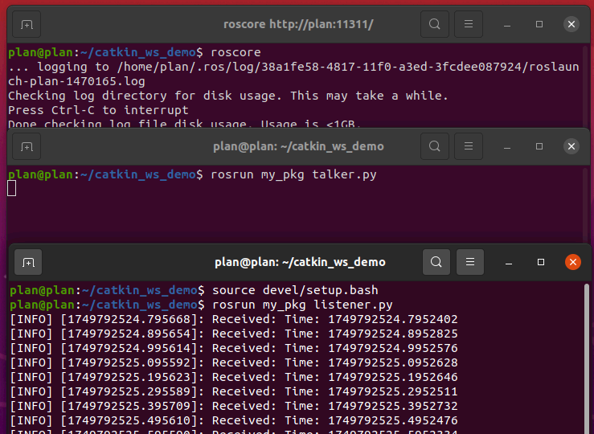
3.5 使用roslaunch启动系统
3.5.1 创建launch文件
步骤1：创建launch目录和文件
# 确保launch目录存在
mkdir -p ~/catkin_ws_demo/src/my_pkg/launch
# 创建launch文件
cd ~/catkin_ws_demo/src/my_pkg/launch
nano start_demo.launch
步骤2：编写launch文件内容
<?xml version="1.0"?>
<!--
ROS Launch文件示例
功能：同时启动发布者和订阅者节点
-->
<launch>
<!-- 启动发布者节点 -->
<node pkg="my_pkg" type="talker.py" name="talker" output="screen" respawn="true">
<!-- 可以在这里设置节点参数 -->
<param name="publish_rate" value="10"/>
</node>
<!-- 启动订阅者节点 -->
<node pkg="my_pkg" type="listener.py" name="listener" output="screen" respawn="true">
</node>
<!-- 可选：设置全局参数 -->
<param name="robot_name" value="dr100"/>
<param name="debug_mode" value="true"/>
<!-- 可选：包含其他launch文件 -->
<!-- <include file="$(find other_pkg)/launch/other.launch"/> -->
</launch>
3.5.2 launch文件参数说明
| 参数 | 说明 | 示例值 |
|---|---|---|
pkg |
功能包名称 | my_pkg |
type |
可执行文件名 | talker.py |
name |
节点名称（运行时名称） | talker |
output |
输出重定向 | screen（终端）/ log（日志文件） |
respawn |
节点崩溃时自动重启 | true / false |
required |
节点退出时关闭整个launch | true / false |
args |
传递给节点的参数 | "--verbose --config=config.yaml" |
3.5.3 运行launch文件
# 终端1：启动roscore
roscore
# 终端2：运行launch文件
source ~/catkin_ws_demo/devel/setup.bash
roslaunch my_pkg start_demo.launch
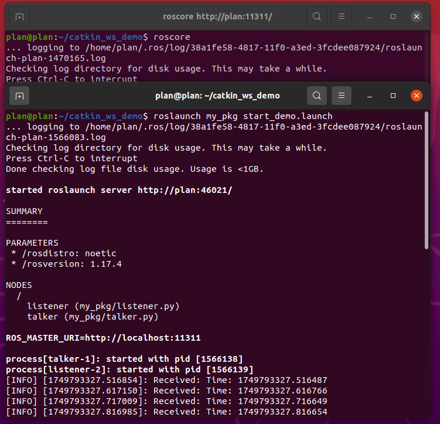
4 外设配置
4.1 Robosense RS-16激光雷达
4.1.1 硬件连接和网络配置
步骤1：物理连接
将RS-16激光雷达通过网线连接到工控机的LAN口
确保雷达供电正常（12V）
步骤2：设置静态IP地址
默认配备的是Robosense RS-16激光雷达，需要将雷达与本机连接的LAN口的ip设置为192.168.1.102
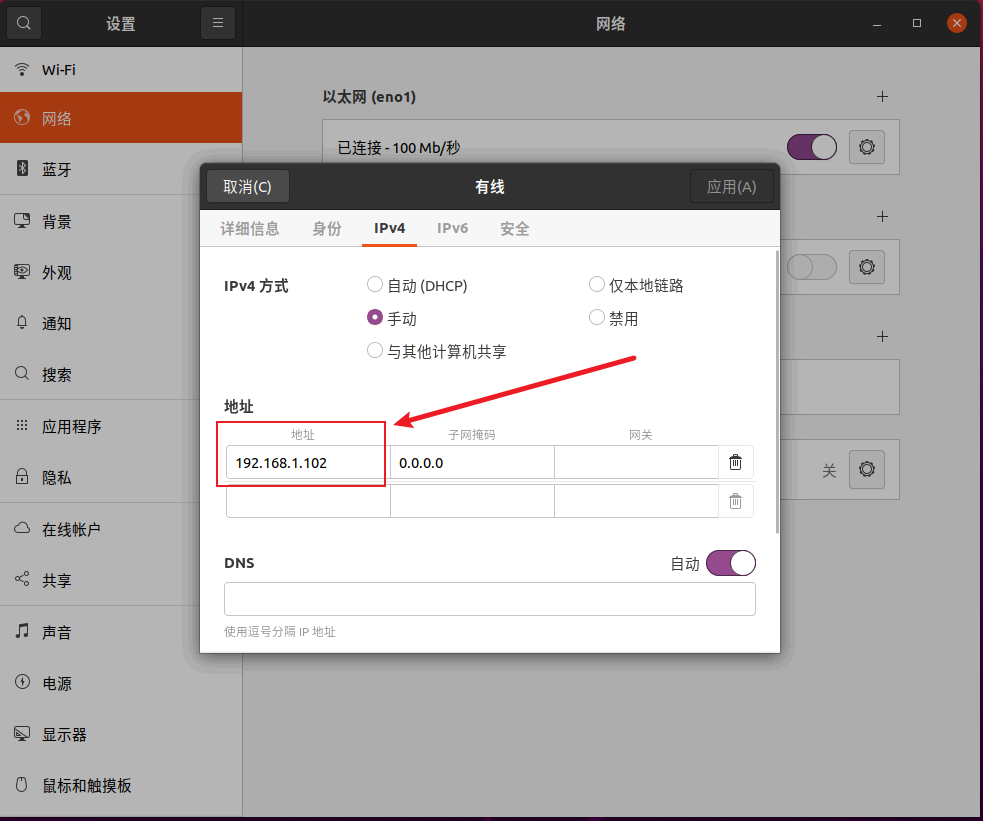
4.1.2 安装驱动依赖
步骤1：更新系统包
# 更新包列表
sudo apt-get update
# 升级已安装的包（可选）
sudo apt-get upgrade
步骤2：安装编译依赖
# 安装YAML解析库
sudo apt-get install -y libyaml-cpp-dev
# 安装网络包捕获库
sudo apt-get install -y libpcap-dev
4.1.3 下载和编译驱动
RoboSense RS-16的ROS驱动可在官方Github下载：rslidar_sdk:https://github.com/RoboSense-LiDAR/rslidar_sdk
步骤1：下载源码
# 进入工作空间src目录
cd ~/catkin_ws/src
# 克隆仓库
git clone https://github.com/RoboSense-LiDAR/rslidar_sdk.git --depth 1
# 进入驱动目录
cd rslidar_sdk
步骤2：初始化子模块
# 初始化子模块
git submodule init
# 更新子模块
git submodule update
步骤3：编译驱动
# 返回工作空间根目录
cd ~/catkin_ws
# 编译特定包
catkin_make --pkg rslidar_sdk
# 或编译整个工作空间
catkin_make -j4 # 使用4个线程并行编译
# 重新加载环境
source devel/setup.bash
4.1.4 配置和运行驱动
步骤1：配置雷达参数（可选）
# 编辑配置文件（可选）
nano ~/catkin_ws/src/rslidar_sdk/config/config.yaml
步骤2：启动雷达驱动
# 确保环境变量已加载
source ~/catkin_ws/devel/setup.bash
# 启动雷达驱动
roslaunch rslidar_sdk start.launch
4.1.5 验证雷达数据
步骤1：查看点云数据
驱动加载后，可使用rostopic获取雷达数据：
# 实时查看点云数据（注意：数据量很大）
rostopic echo /rslidar_points --noarr
步骤2：使用rviz可视化
# 启动rviz
rviz
在rviz中：
- 设置Fixed Frame为"robosense"
- 点击Add -> By topic -> /rslidar_points -> PointCloud2
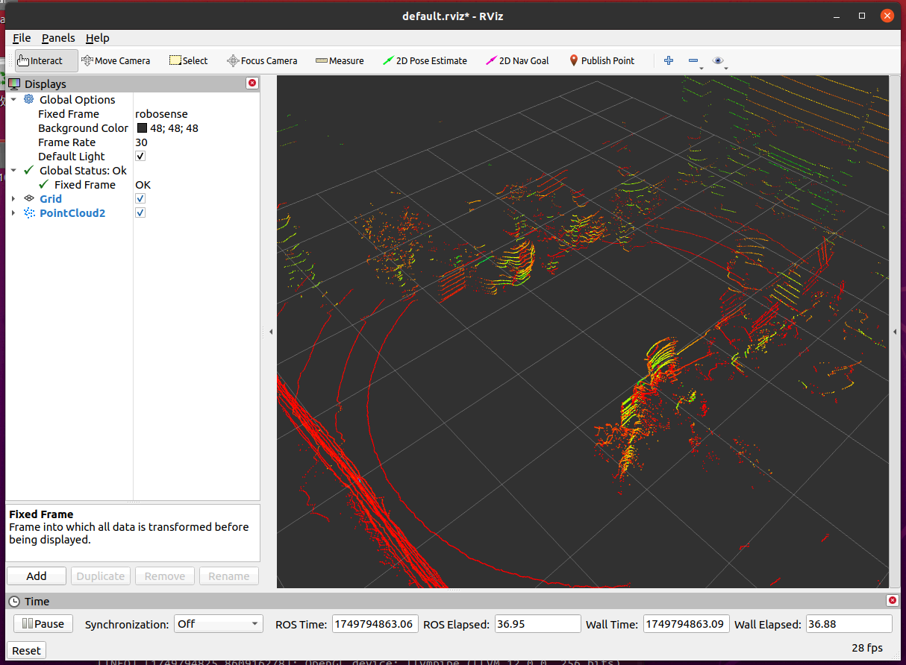
4.2 IMU
4.2.1 硬件介绍和连接
默认配备维特智能九轴IMU HWT906，可参考官方手册HWT906产品资料，进行配置与校准
4.2.2 安装驱动依赖
步骤1：安装Qt5串口库
# 安装Qt5串口开发库
sudo apt-get install libqt5serialport5-dev
4.2.3 下载和编译驱动
步骤1：下载源码
# 进入工作空间
cd ~/catkin_ws
# 克隆仓库到src目录
git clone --recursive https://github.com/ElettraSciComp/witmotion_IMU_ros.git src/witmotion_ros
步骤2：编译驱动
# 编译特定包
catkin_make --pkg witmotion_ros
# 重新加载环境
source devel/setup.bash
4.2.4 运行和测试IMU
步骤1：启动IMU驱动
# 确保环境变量已加载
source ~/catkin_ws/devel/setup.bash
# 启动IMU驱动
roslaunch witmotion_ros witmotion.launch
步骤2：查看IMU数据
# 查看IMU数据
rostopic echo /imu/data
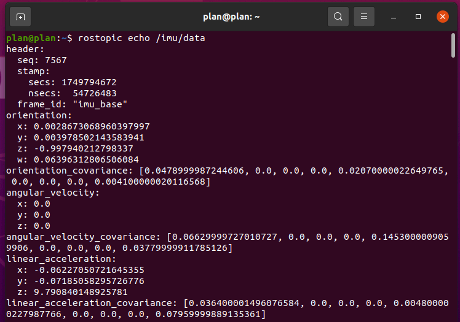
4.3 深度相机
4.3.1 硬件介绍
配备奥比中光双目相机Gemini215，适用高精度近距离3D扫描应用，可满足人体部位扫描，物体扫描等场景需求。
4.3.2 相机启动
在下图文件目录下启动gemini2.launch；

新开终端输入：
rviz
在rviz界面中设置如下：
设置Fixed Frame为"camera_link"；
点击Add添加彩色图像。


若要显示深度图形，则添加如下：

灰度相机添加：

点云添加：

最终效果图如下图5.6所示：

4.4 RTK
注意：未开通RTK账号时，使用GPS信号会因环境因素导致无信号输出。
4.4.1 硬件配置
通过电脑安装 CRU 或串口调试助手并连接 M100 数据线 com1/com3 对其进行配置输出 NMEA-0183 数据。默认波特率 115200，依次输入指令：
定位信息：log gpgga ontime
测向信息：log headinga ontime
速度信息：log gpvtg ontime
修改串口波特率：com com1 115200 // 修改成115200波特率；
保存设置：saveconfig。
4.4.2 安装pip和更换python源
安装pip，终端输入：
sudo apt install python3-pip
pip install -i https://pypi.tuna.tsinghua.edu.cn/simple/ testresources --timeout=120
sudo apt-get install python3-serial
更换python源，终端输入：
wget http://fishros.com/install -O fishros && . fishros
选择13，空格等待安装完成。
4.4.3 编译和赋予权限
完成后在gps_ws目录下编译，打开终端输入：
cd gps_ws
catkin_make
编译完成后终端输入命令：
sudo chmod 777 /dev/ttyUSB*
4.4.4 运行测试
在gps_ws/src/nmea_navsat_driver/launch目录下打开终端输入：
cd gps_ws/src/nmea_navsat_driver/launch
roslaunch nmea_serial_driver.launch
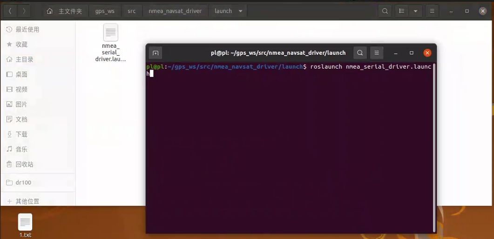
保持终端开启，再在gps_ws/src/gps_umd/gps_common/launch目录下打开终端输入：
cd gps_ws/src/gps_umd/gps_common/launch
roslaunch gps2utm.launch
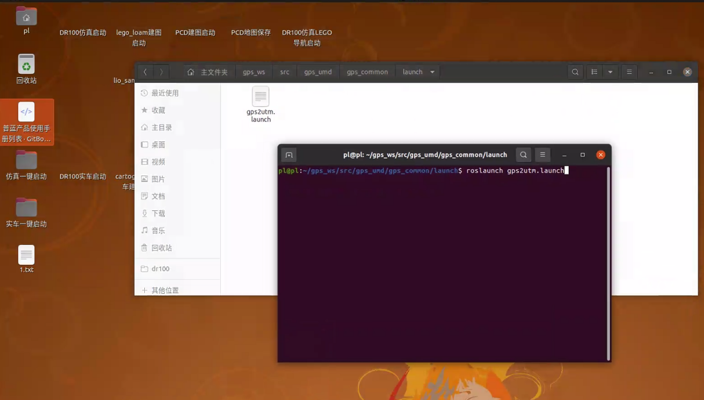
新开终端输入命令查看数据：
rostopic echo fix
5 三维仿真导航实验
5.1 工程环境
从AutoTrack-4X PlanRobotShenZhen Githubhttps://github.com/PlanRobotShenZhen/AutoTrack-4X.git 或压缩包提取工程
5.1.1 工程目录结构
~/catkin_ws
├── maps
├── README.md
├── src
│ ├── bot_navigation
│ ├── CMakeLists.txt
│ ├── dr100
│ │ ├── dr100
│ │ ├── dr100_chassis_driver
│ │ ├── robosense_simulator
│ │ ├── rslidar_sdk
│ │ ├── rs_to_velodyne
│ │ ├── velodyne_simulator
│ │ └── witmotion_ros
│ ├── mapping
│ │ ├── LIO-SAM
│ │ ├── pcd2pgm
│ │ ├── SC-LeGO-LOAM
│ │ └── swap_map_xyz.py
│ └── nav_stack
│ ├── hdl
│ │ ├── fast_gicp
│ │ ├── hdl_global_localization
│ │ ├── hdl_localization
│ │ └── ndt_omp
│ └── navigation
└── tools
~/catkin_ws(ROS工作空间根目录)maps/：存放建图生成点云地图文件（如.pcd）src/：核心功能包源码目录bot_navigation/：机器人导航相关功能包dr100/：机器人硬件驱动与仿真dr100_chassis_driver/：底盘驱动robosense_simulator/&velodyne_simulator/：激光雷达仿真rslidar_sdk/&rs_to_velodyne/：雷达驱动与数据转换witmotion_ros/：IMU 驱动包
mapping/：SLAM建图算法包LIO-SAM/&SC-LeGO-LOAM/：激光惯性SLAM算法pcd2pgm/：点云转栅格地图工具
nav_stack/：导航算法栈hdl/：点云处理相关（如hdl_localization定位模块）navigation/：传统导航算法（如代价地图、全局/局部规划）
tools/：辅助工具或脚本（非ROS功能包）
5.1.2 工程编译
步骤1：获取工程源码
# 方法1：从GitHub克隆
cd ~
git clone https://github.com/PlanRobotShenZhen/outdoorRobot.git catkin_ws
cd ~/catkin_ws && git submodule update --init --recursive # 更新子模块
# 方法2：如果已有压缩包，解压到用户主目录
# unzip outdoorRobot.zip -d ~/
# mv outdoorRobot catkin_ws
# 进入工作空间
cd ~/catkin_ws
步骤2：安装系统依赖
# 更新包列表
sudo apt-get update
sudo apt-get install -y libyaml-cpp-dev
sudo apt-get install -y libpcap-dev
sudo apt-get install -y libqt5serialport5-dev
sudo apt-get install -y ros-noetic-navigation
sudo apt-get install -y ros-noetic-robot-localization
sudo apt-get install -y ros-noetic-robot-state-publisher
sudo apt-get install -y ros-noetic-navigation*
sudo apt-get install -y ros-noetic-pointcloud-to-laserscan
sudo apt-get install -y ros-noetic-teb-local-planner
sudo apt-get install -y ros-noetic-serial
注：需要根据官方文档安装gtsam v4.1.0 https://github.com/borglab/gtsam
步骤3：编译工程
# 清理之前的编译结果（如果存在），也可以用于检查是否缺少依赖
catkin_make clean
# 1. 单独编译 lego_loam 的消息文件cloud_msgs (单线程，避免依赖问题)
catkin_make --pkg cloud_msgs -j1
# 2. 编译剩余所有包
catkin_make -DCATKIN_WHITELIST_PACKAGES="" -j4 -DCMAKE_BUILD_TYPE=Release
# 重新加载环境
source devel/setup.bash
步骤4：串口设备配置
# 复制串口规则文件
sudo cp ~/catkin_ws/tools/serial/serial_rules/* /etc/udev/rules.d/
# 重新加载udev规则
sudo udevadm control --reload-rules
sudo udevadm trigger
# 将用户添加到dialout组（串口访问权限）
sudo usermod -aG dialout $USER
sudo usermod -aG dialout plan
sudo usermod -aG dialout root
# 重新登录或重启以使权限生效
注：端口设置的规则文件可根据具体情况自行修改。如果遇到编译错误，请检查依赖是否完整安装，或查看错误日志进行排查。
5.2 DR100底盘仿真
5.2.1 启动Gazebo仿真环境
运行DR100底盘仿真包dr100的run.launch：
# 确保工作空间环境已加载
source ~/catkin_ws/devel/setup.bash
roslaunch dr100 gazebo.launch
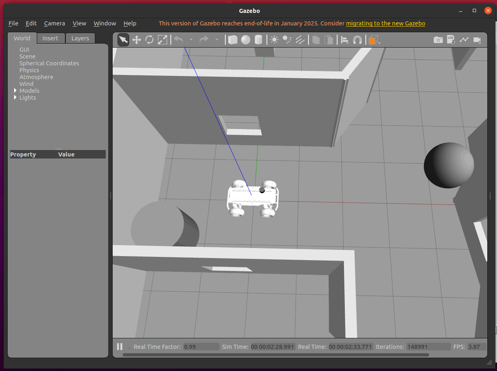
5.2.2 使用RViz可视化机器人
步骤1：启动RViz
# 新开终端，启动RViz
rviz
步骤2：配置RViz显示
在RViz界面中进行以下配置：
设置固定坐标系
- 在左侧面板找到"Global Options"
- 将"Fixed Frame"设置为"base_link"
添加机器人模型显示
- 点击左下角"Add"按钮
- 选择"RobotModel"
- 确认"Robot Description"参数为"robot_description"
添加TF坐标系显示
- 点击"Add" -> "TF"
- 可以看到机器人各个坐标系的关系
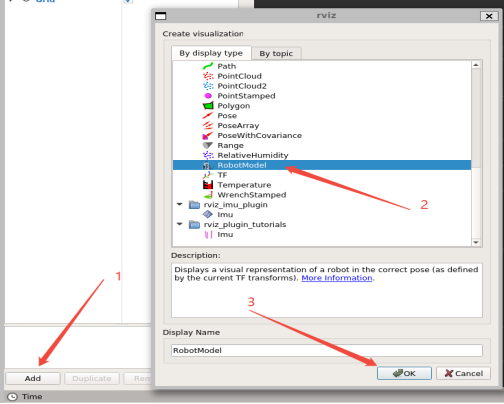
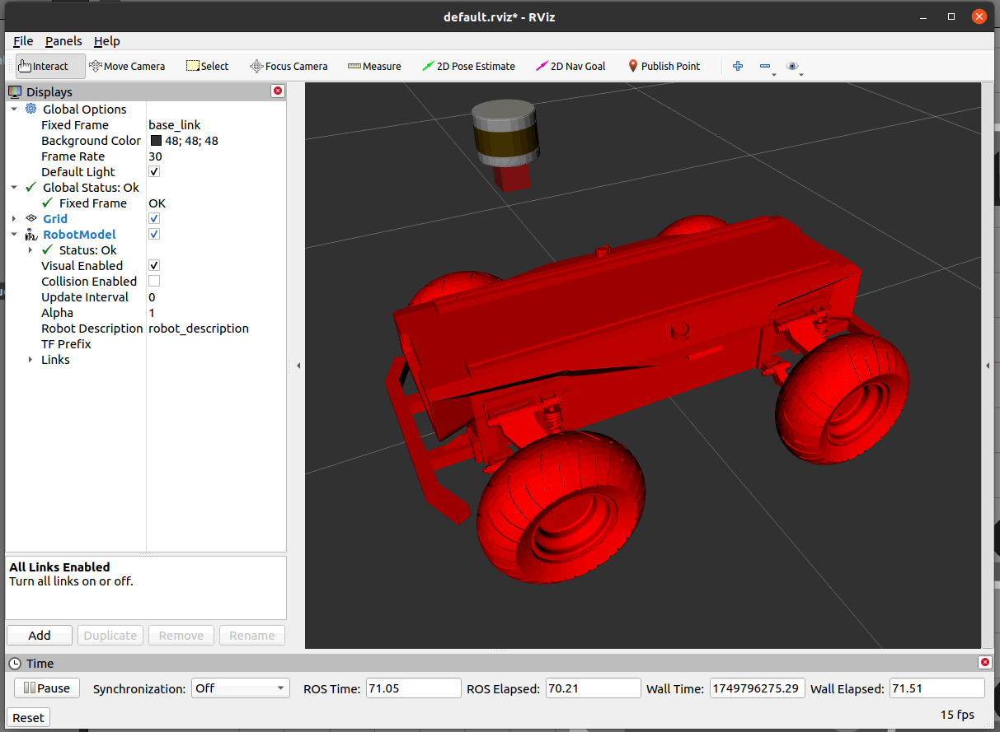
5.2.3 控制机器人运动
方法1：使用键盘控制
# 安装键盘控制包（如果未安装）
sudo apt-get install ros-noetic-teleop-twist-keyboard
# 启动键盘控制
rosrun teleop_twist_keyboard teleop_twist_keyboard.py
# 按照提示使用以下按键控制：
# u i o
# j k l
# m , .
# q/z : 增加/减少最大速度
# w/x : 增加/减少线速度
# e/c : 增加/减少角速度
方法2：使用rqt_robot_steering图形控制
# 启动图形控制界面
rosrun rqt_robot_steering rqt_robot_steering
# 在界面中使用滑块或输入框控制线速度和角速度
5.3 三维建图
5.3.1 建图算法选择
启动DR100底盘仿真后，可以通过LeGO-LOAM或LIO-SAM建图算法进行建图，此处使用LeGO-LOAM进行实验。
算法对比：
- LeGO-LOAM：轻量级激光雷达里程计和建图，适合实时性要求高的场景
- LIO-SAM：激光惯性里程计和建图，精度更高但计算量较大
5.3.2 配置仿真时间
步骤1：修改LeGO-LOAM配置
首先需要让系统采用仿真时间，即修改~/catkin_ws/src/mapping/SC-LeGO-LOAM/SC-LeGO-LOAM/LeGO-LOAM/launch/run.launch中的/use_sim_time参数为true：
gedit ~/catkin_ws/src/mapping/SC-LeGO-LOAM/SC-LeGO-LOAM/LeGO-LOAM/launch/run.launch
修改内容：
<!-- 在launch文件中找到并修改以下参数 -->
<param name="/use_sim_time" value="true" />
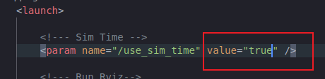
5.3.3 启动建图系统
启动LeGO-LOAM建图
# 新开终端，加载环境
source ~/catkin_ws/devel/setup.bash
# 启动LeGO-LOAM建图算法
roslaunch lego_loam run.launch
5.3.4 控制机器人进行建图
使用rqt_robot_steering图形控制，在界面中使用滑块或输入框控制线速度和角速度
rosrun rqt_robot_steering rqt_robot_steering
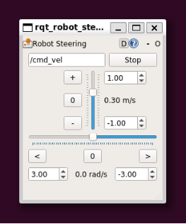
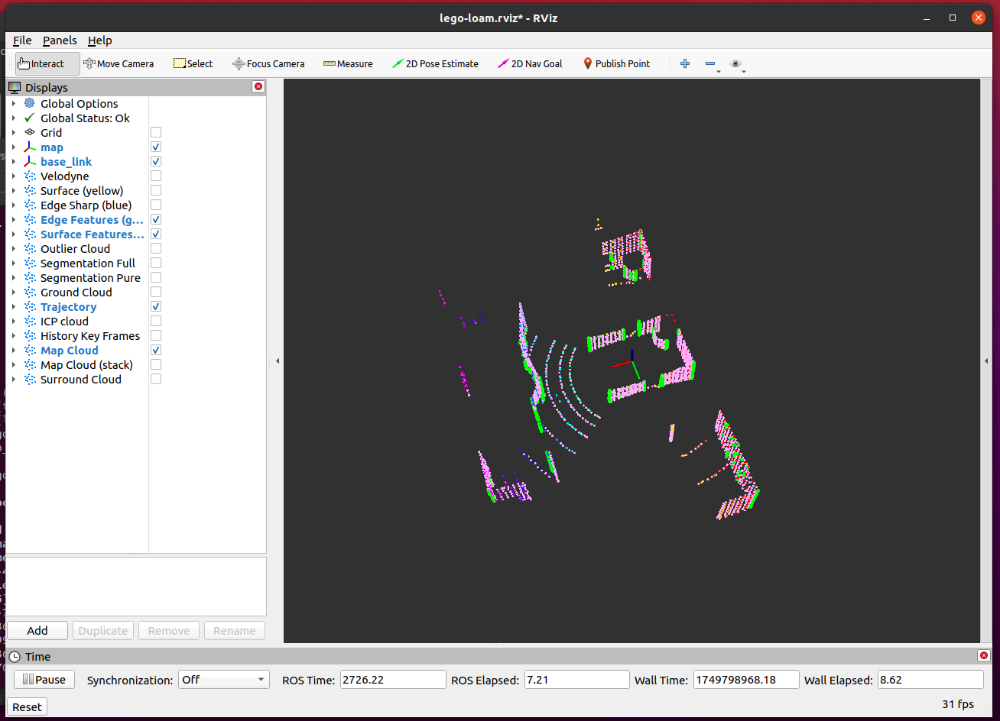
5.3.5 保存建图结果
步骤1：完成建图
当建图完成后，在LeGO-LOAM终端按Ctrl+C停止建图，系统会自动保存点云地图
步骤2：查看保存的地图
# 检查地图保存目录
ls -la ~/catkin_ws/maps/LeGO-LOAM/
# 应该看到类似文件：
# finalCloud.pcd # 最终点云地图
# globalMap.pcd # 全局地图
# trajectory.pcd # 轨迹点云
步骤3：使用PCL工具查看点云
# 安装PCL工具（如果未安装）
sudo apt-get install pcl-tools
# 查看最终点云地图
pcl_viewer ~/catkin_ws/maps/LeGO-LOAM/finalCloud.pcd
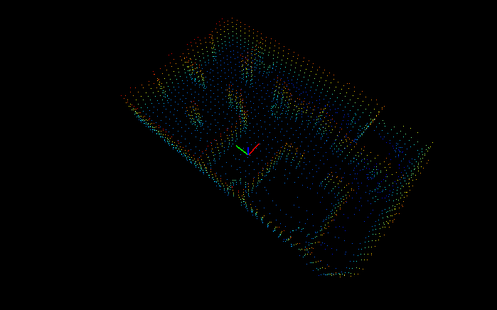
步骤4：修正地图
将catkin_ws/maps/leGO-LOAM目录下的finalCloud.pcd移动到catkin_ws/src/mapping目录下，在此目录下右键打开终端：

输入命令：
python3 swap_map_xyz.py
将新生成的图片命名为finalCloud.pcd，删除旧图片，将重新命名过的图片移动回catkin_ws/maps/leGO-LOAM目录下。

5.4 地图转换
5.4.1 点云转栅格地图
3D点云图保存成功后，需将3D点云图转为2D的栅格地图。本文使用pcd2pgm进行转换。
首先根据具体情况修改~/catkin_ws/src/mapping/pcd2pgm/pcd2pgm/launch/run.launch的参数
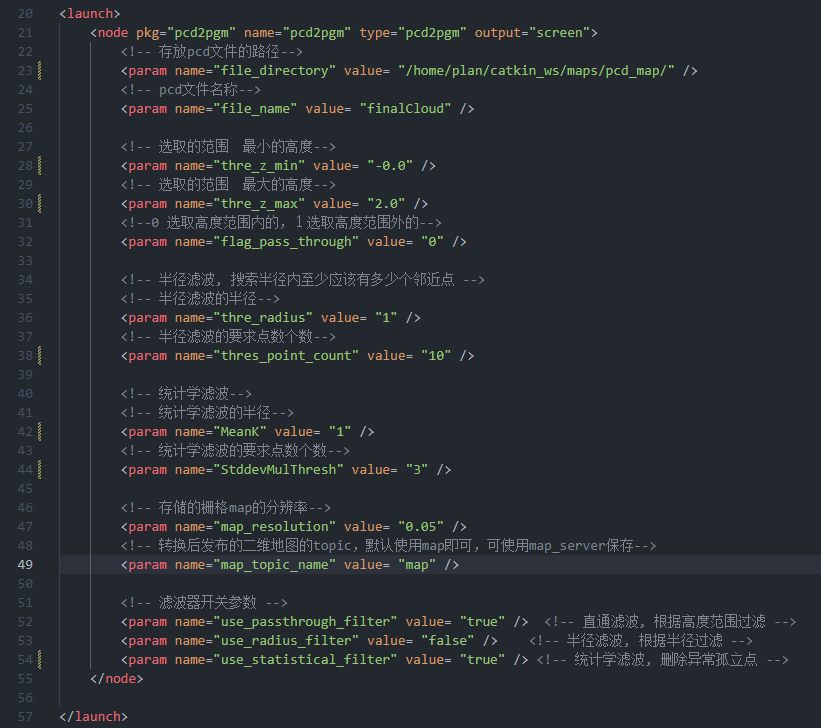
然后打开三个终端分别运行以下命令，将栅格地图保存到本地，将生成栅格地图finalCloud.pgm与配置finalCloud.yaml：
# 终端一: roscore
roscore
# 终端二: 启动pcd2pgm
roslaunch pcd2pgm run.launch
# 终端三: 保存栅格地图到当前目录，注意不要加.pgm
rosrun map_server map_saver -f finalCloud
5.4.2 参数说明
- file_directory: 存放pcd文件的路径
- file_name: pcd文件名称，默认为
finalCloud - thre_z_min: 选取的范围最小高度
- thre_z_max: 选取的范围最大高度
- flag_pass_through: 选取高度范围内的标志，
0表示保留范围内，1表示保留范围外 - thre_radius: 半径滤波的半径
- thres_point_count: 半径滤波的要求点数个数
- MeanK: 统计学滤波的半径
- StddevMulThresh: 统计学滤波的要求点数个数
- map_resolution: 存储的栅格map的分辨率
- map_topic_name: 转换后发布的二维地图的topic
- use_passthrough_filter: 直通滤波开关
- use_radius_filter: 半径滤波开关
- use_statistical_filter: 统计学滤波开关
5.4.3 编辑栅格地图(可选)
GIMP官网：
https://www.gimp.org/downloads/
3D点云图转换成的2D栅格地图可能存在噪点或障碍物边缘断层等问题，可以使用Adobe Photoshop、GIMP等修图软件进行处理。进行擦除噪点、障碍物描边等操作。本文使用GIMP为例：
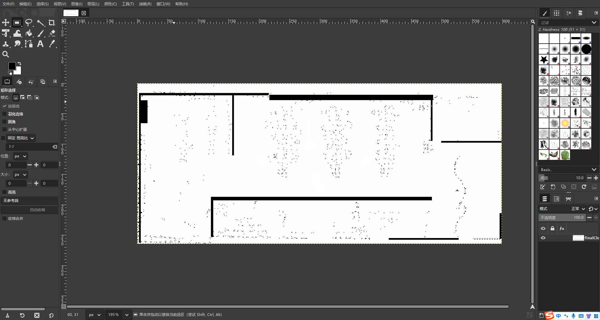
5.5 三维导航
5.5.1 替换地图
三维导航需要3D点云图与2D的栅格地图，需要将finalCloud.pcd、finalCloud.pgm、finalCloud.yaml复制到~/catkin_ws/src/bot_navigation/map/3d/lego文件夹下
cp finalCloud.pcd ~/catkin_ws/src/bot_navigation/map/3d/lego/
cp finalCloud.pgm ~/catkin_ws/src/bot_navigation/map/3d/lego/
cp finalCloud.yaml ~/catkin_ws/src/bot_navigation/map/3d/lego/
5.5.2 启动DR100底盘
参考 5.2 DR100底盘
5.5.3 启动导航程序
打开一个新终端启动导航程序
roslaunch bot_navigation lego_nav.launch
初始画面如下图所示：

可以看见目前x轴往左，跟仿真方向相比逆时针旋转90°，需进行重定向；
点击2D Pose Estimate,箭头方向即为x轴方向，拖动箭头使其和机器人方向一样：

点击2D Nav Goal,选择目标点即可导航：

若速度太慢，在catkin_ws/src/bot_navigation/param/3d目录下打开teb文件：

修改最大前向速度和最大前向加速度，成正比，工作空间下重新编译。
注：实际机器人导航时请谨慎调整参数！！！

膨胀系数修改：
下图圈画地方为膨胀系数，即与障碍物的膨胀距离，太近可能导致巡检机器人与障碍物发生碰撞。

膨胀系数文件也在刚刚速度修改的文件夹中，修改膨胀半径即可：

5.5.4 插件使用（重点）
打开导航后，出现如下图所示界面：

点击Patrol Point Tool,箭头为机器人朝向，鼠标在目标点拖动设置导航目标点和机器人朝向，按照顺序设置多个目标点，点击开始巡检，机器人将会自动开始导航巡检任务；巡检完成后，点击清空路径可以重新设置导航目标点，勾选循环模式机器人将按照设置的目标点进行循环巡检。此插件与2D Nav Goal设置目标导航点不冲突。
6 三维实机导航实验
6.1 工程环境
参考 5.1 工程环境
6.2 DR100底盘
需要确保激光雷达、IMU正常链接，然后启动底盘驱动
roslaunch dr100 run.launch
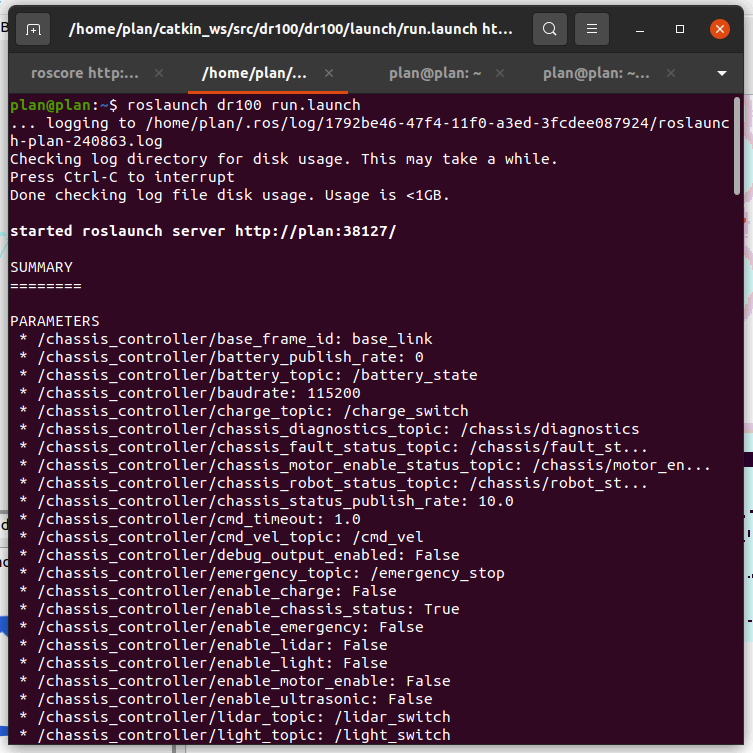
6.3 三维建图
参考 5.3 三维建图
注意与仿真实验中存在区别，需要把仿真时间禁用，且使用无线手柄控制机器人进行建图。
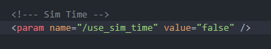
6.4 地图转换
参考 5.4 地图转换
6.5 三维导航
参考 5.5 三维导航
7 一键启动
7.1 ventory U盘启动盘制作
7.1.1 启动盘制作
进入网址：Releases · ventoy/Ventoy · GitHub。


下载安装后解压打开文件，双击打开应用。


插入U盘，32G以上，点击刷新会自动识别到U盘，确认U盘正确，点击安装。

7.1.2 镜像导入
直接将镜像文件放入刚刚制作的系统盘中。
7.2 系统安装
打开工控机，进入bios设置选为U盘启动，进入安装程序。


填写信息，用户名字等不能修改，密码自己修改。

点击第一行，选择删除：

会出现上图第二行内容，点击第二行，设置为512MB,点击右边左箭头：

出现以下界面，点击第二行，选择挂载点，将格式勾选去掉：

点击第三行，直接创建：

选择挂载点，格式不用取消勾选：

示例：


成功后进入系统为以下画面，lio_sam建图更准确：

7.3 lego_loam启动
步骤1：双击初始界面中DR100仿真启动：
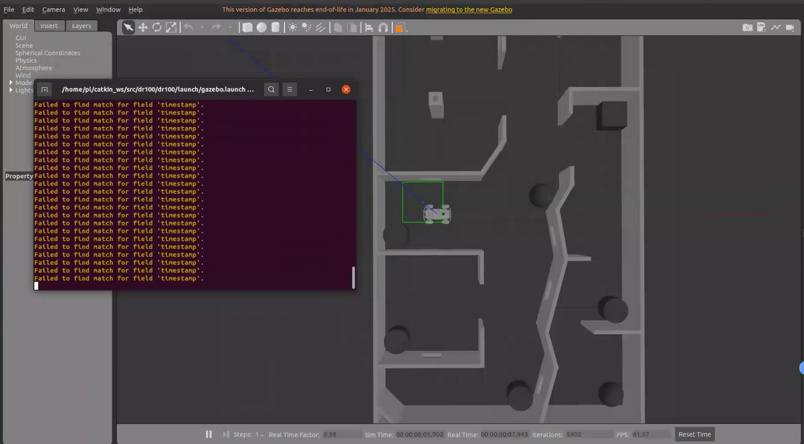
步骤2：保持gazebo开启，双击lego_loam建图启动；
新开终端输入命令开启键盘控制：
rosrun teleop_twist_keyboard teleop_twist_keyboard.py
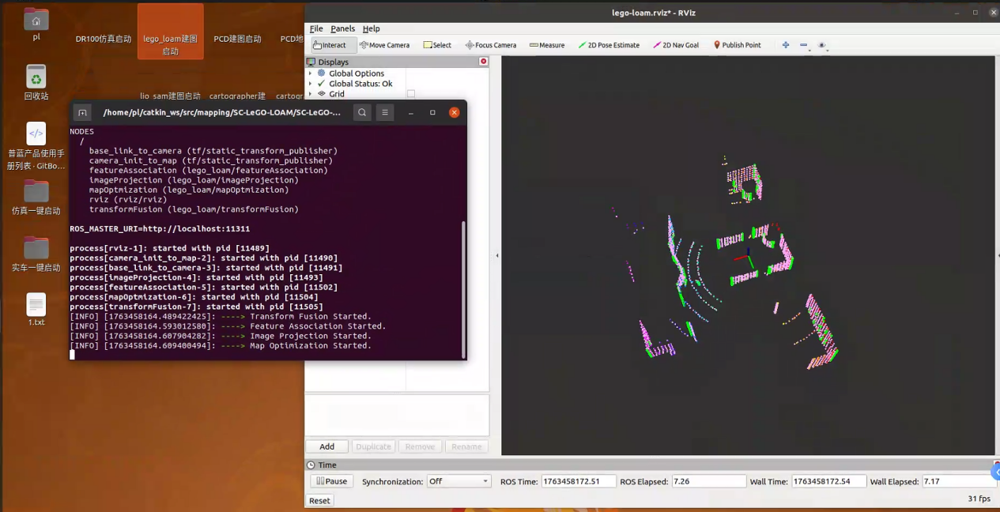
步骤3：建图完成后，ctrl+c关闭前面所有终端，修正地图：
将catkin_ws/maps/leGO-LOAM目录下的finalCloud.pcd移动到catkin_ws/src/mapping目录下，在此目录下右键打开终端：
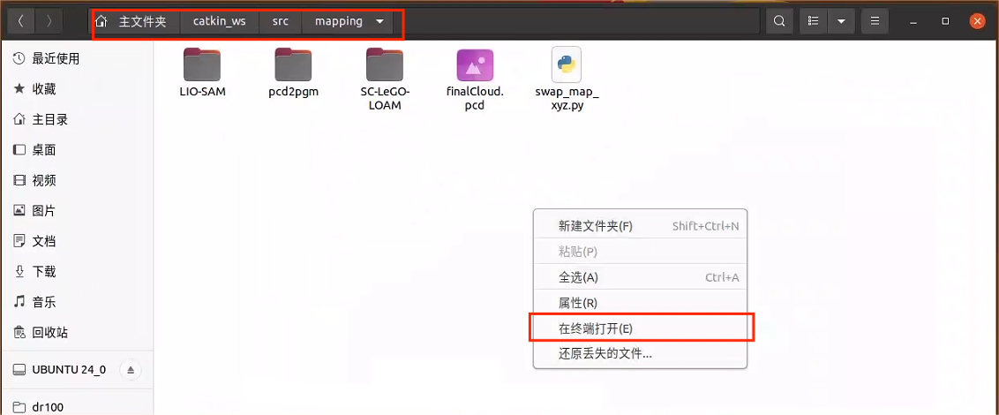
输入命令：
python3 swap_map_xyz.py
将新生成的图片命名为finalCloud.pcd，删除旧图片，将重新命名过的图片移动回catkin_ws/maps/leGO-LOAM目录下。
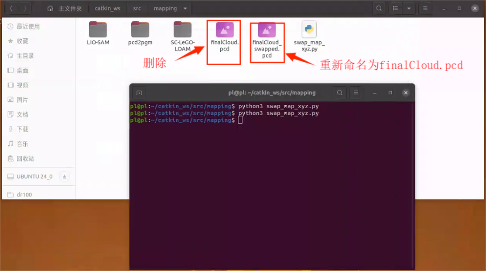
步骤4：双击PCD建图启动，再双击PCD地图保存：
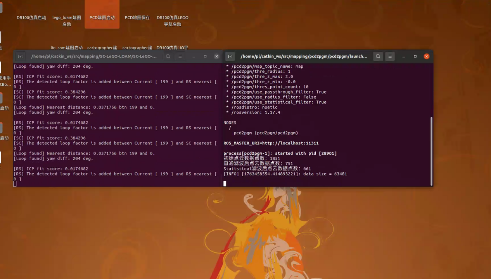
步骤5：转移地图：
将下图圈画的文件移动到catkin_ws/src/bot_navigation/map/3d/lego目录下：
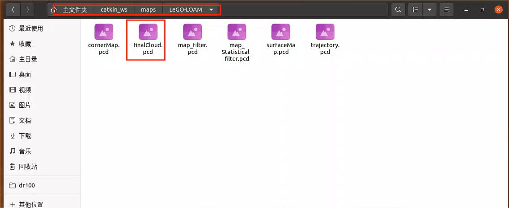
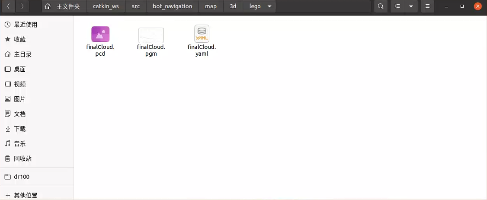
步骤6：双击DR100仿真启动，再双击DR100仿真LEGO导航启动：
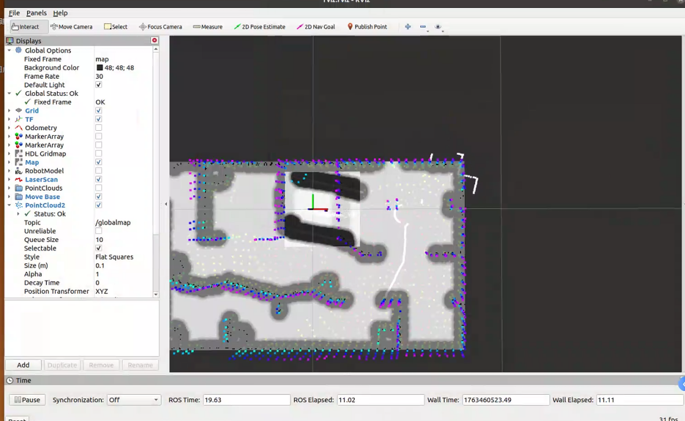
点击2D Pose Estimate进行重定向：
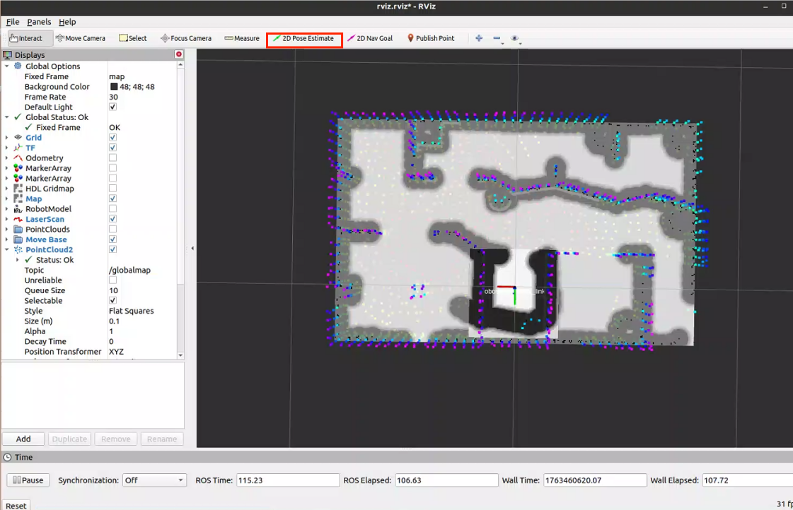
点击2D Nav Goal进行导航：
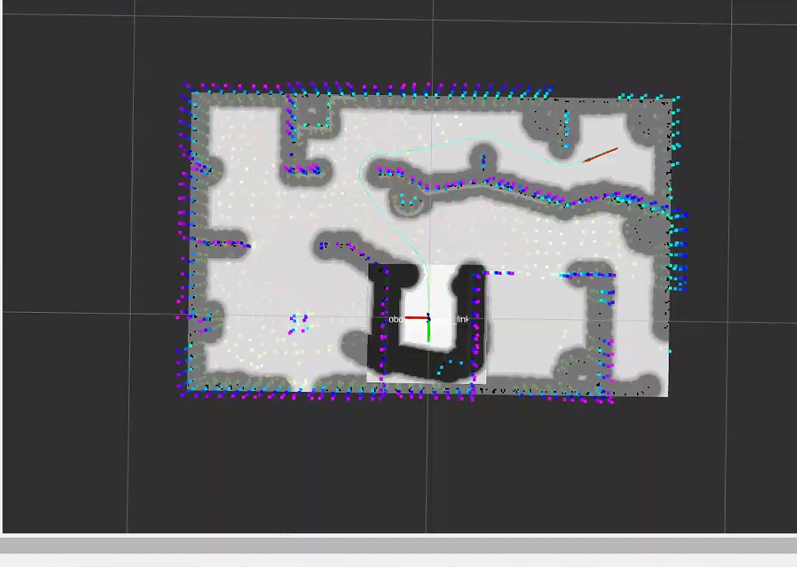
7.4 lio_sam启动
双击DR100仿真启动，保持终端开启，双击lio_sam建图启动：
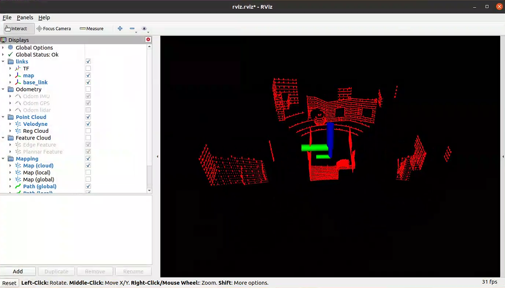
继续双击打开cartographer建图启动：
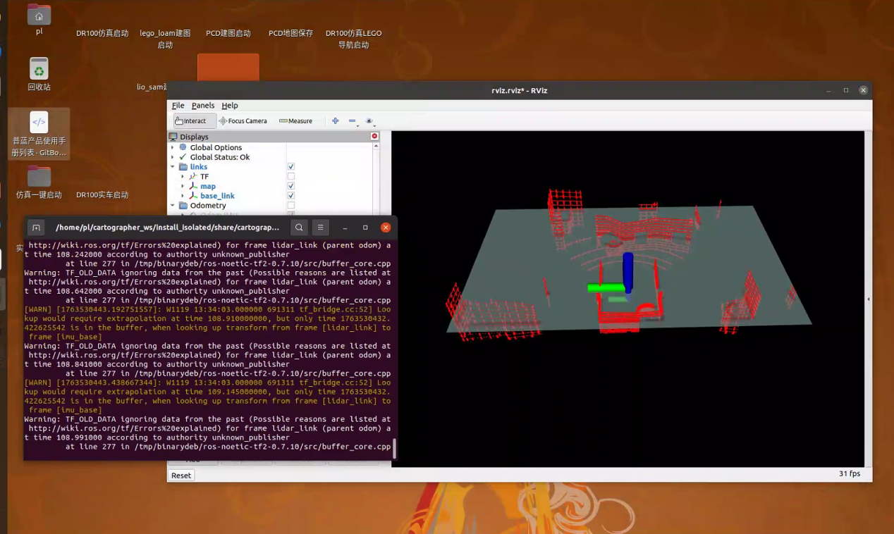
新开终端启动键盘控制，开始建图：
rosrun teleop_twist_keyboard teleop_twist_keyboard.py
完成建图后，先开启cartographer建图保存，然后关闭所有终端：
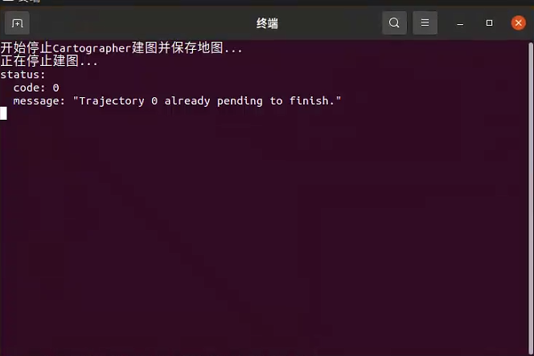
进入catkin_ws/maps/LIO_SAM目录下，找到刚刚保存的地图，将其中的GlobalMap.pcd移动catkin_ws/src/bot_navigation/map/3d/lio里。
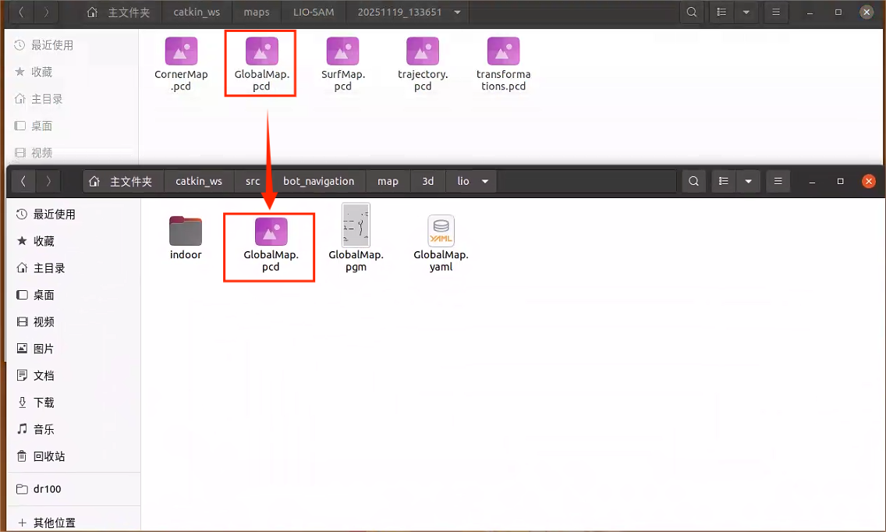
开启DR100仿真启动，再开启DR100仿真导航LIO导航启动：
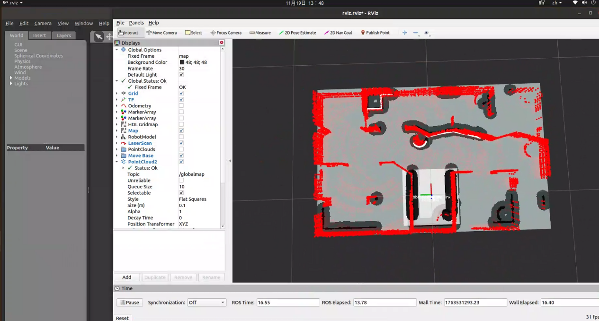
点击2D Nav Goal开始导航。
7.5 DR100底盘导航
方法1：lego_loam
参考仿真顺序，将DR100实车启动替换成DR100仿真启动，建图时用无线手柄控制；
方法2：lio_sam
参考仿真顺序，将DR100实车启动替换成DR100仿真启动，将cartographer实车建图启动替换成cartographer建图启动，建图时用无线手柄控制。
8 结论
本文介绍了以基于DR100底盘为例的AutoTrack-4X 导航套件无人驾驶平台的SLAM系统搭建与实现过程。从工控机环境配置开始，涵盖了Ubuntu 20.04、ROS Noetic的安装配置，为后续开发奠定了坚实基础。
通过ROS基础教程的学习，掌握了ROS文件系统、节点通信模型等核心概念，并通过实际的话题通信示例加深了理解。在外设配置方面，成功集成了Robosense RS-16激光雷达和维特智能九轴IMU，为SLAM系统提供了必要的传感器数据支持。
在三维仿真导航实验中，利用Gazebo仿真环境验证了LeGO-LOAM建图算法的有效性，并通过pcd2pgm工具实现了3D点云到2D栅格地图的转换，最终构建了完整的导航系统。实机导航实验进一步验证了系统在真实环境中的可行性和稳定性。
整个系统实现了从环境感知、地图构建到路径规划的完整无人驾驶功能链条，为后续的无人驾驶技术研究和应用提供了重要参考。